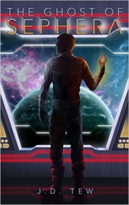
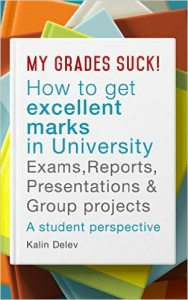
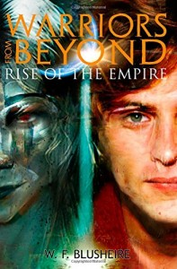

Scott Spotson
Editing Services
Scott Spotson also offers editorial services to aspiring writers for a reasonable fee. Scott believes in “deep editing” that improves a story, working closely with the author. After all, an editor could do grammatical and spelling checks, but would that improve your story much? It is best to fix the basis of the story, and to keep the reader engaged from the very beginning, rather than gloss over a story that may not hook a reader’s interest. Contact Scott at author@scottspotson.com for more details if you have a story about to be published.
Scott is proud to be the editor for two science fiction coming-of-age stories titled, “The Acolytes of Crane” and “The Ghost of Sephera" by talented author J.D. Tew. Now Scott has finished editing his third book, “Emergent,” now available. He also has edited “Warriors From Beyond,” an epic fantasy (185,000 words!) with a twist of science fiction on a post-apocalyptic Earth). As well, Scott has edited “My Grades Suck! How to Get Excellent Marks in University Exams, Reports, Presentations, and Group Projects.” As well, he has co-written a 120,000-word drama titled “Camouflage” involving several mysteries in a sleepy New England town (not yet published).
http://www.amazon.com/Ghost-Sephera-Book-Theodore-Crane-ebook/dp/B00NZ86KBW
http://www.amazon.com/The-Acolytes-Crane-J-Tew-ebook/dp/B00DQBZQFO
http://www.amazon.com/Excellent-University-Reports-Presentations-Projects-ebook/dp/B019CFHRLI
http://www.amazon.com/Warriors-Beyond-Rise-Empire-1/dp/1508792658
In addition, Scott has ghostwritten several books on fee-for-service contracts: (cannot reveal titles due to confidentiality)
- 100,000-word humorous take on an alternate society detailing the day-to-day life of one of its residents - four 10,000-word girl’s stories on spying and adventure, as a series - a “guy’s holiday” book involving raunchy humor - an athletic book involving travel tips - a 85,000-word book on the intertwined lives of women who are best buddies
You may check out Scott Spotson on Upwork which is a freelancer website, or invite him directly at author@scottspotson.com to ask for a private project!
Scott is proud to be the editor for two science fiction coming-of-age stories titled, “The Acolytes of Crane” and “The Ghost of Sephera" by talented author J.D. Tew. Now Scott has finished editing his third book, “Emergent,” now available. He also has edited “Warriors From Beyond,” an epic fantasy (185,000 words!) with a twist of science fiction on a post-apocalyptic Earth). As well, Scott has edited “My Grades Suck! How to Get Excellent Marks in University Exams, Reports, Presentations, and Group Projects.” As well, he has co-written a 120,000-word drama titled “Camouflage” involving several mysteries in a sleepy New England town (not yet published).
http://www.amazon.com/Ghost-Sephera-Book-Theodore-Crane-ebook/dp/B00NZ86KBW

http://www.amazon.com/The-Acolytes-Crane-J-Tew-ebook/dp/B00DQBZQFO
http://www.amazon.com/Excellent-University-Reports-Presentations-Projects-ebook/dp/B019CFHRLI

http://www.amazon.com/Warriors-Beyond-Rise-Empire-1/dp/1508792658

In addition, Scott has ghostwritten several books on fee-for-service contracts: (cannot reveal titles due to confidentiality)
- 100,000-word humorous take on an alternate society detailing the day-to-day life of one of its residents - four 10,000-word girl’s stories on spying and adventure, as a series - a “guy’s holiday” book involving raunchy humor - an athletic book involving travel tips - a 85,000-word book on the intertwined lives of women who are best buddies
You may check out Scott Spotson on Upwork which is a freelancer website, or invite him directly at author@scottspotson.com to ask for a private project!